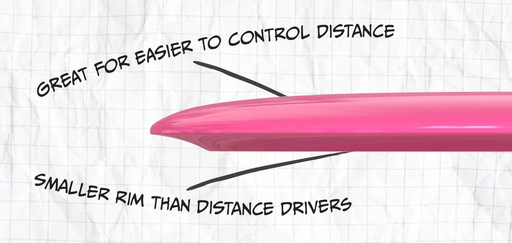
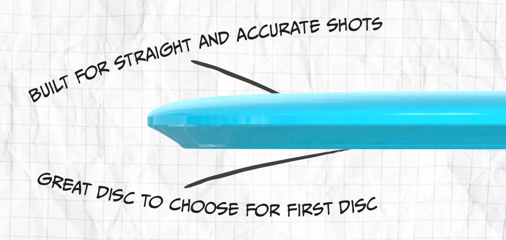
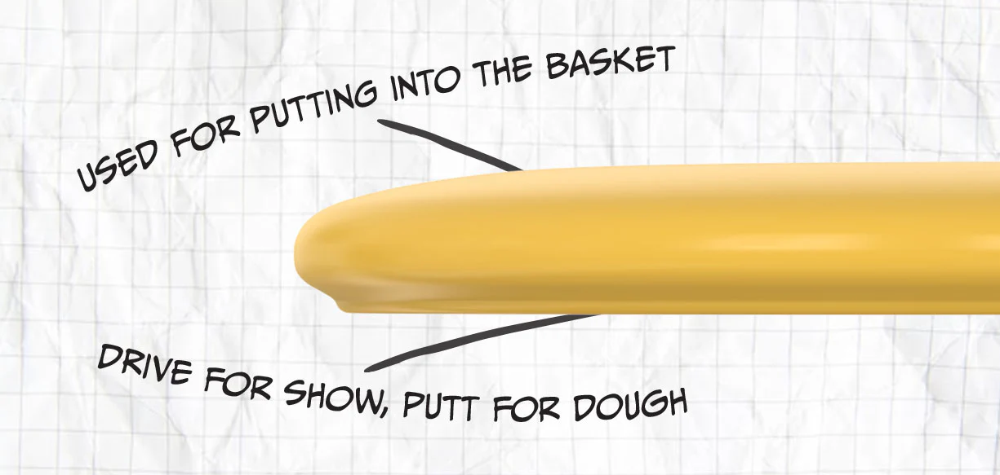

Disc Types & Flight Paths
Choosing the right disc makes all the difference in your game. Learn the main disc types and how each one flies.
Disc Types

Drivers
Designed for maximum distance. Drivers have sharper rims and higher speeds. Best used off the tee for long throws.

Midrange Discs
Balanced between distance and control. Midranges are great for approach shots or when accuracy matters more than distance.

Putters
Straight-flying discs for short throws and putting. They offer more glide and control for precision near the basket.
Projected Flight Paths
Each disc type has a unique flight pattern determined by its speed, glide, turn, and fade. These visuals show typical flight paths for each disc type:
Driver – Long, Curving Finish
Midrange – Smooth, Controlled Arc
Putter – Straight and Slow Glide